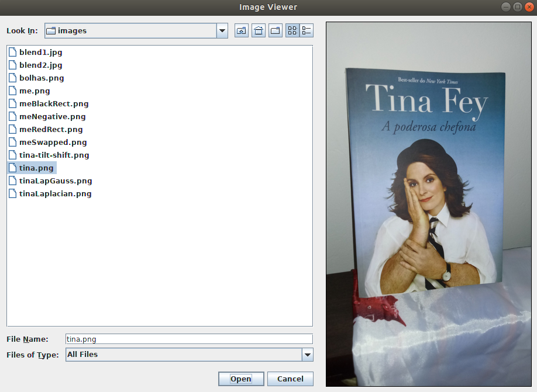
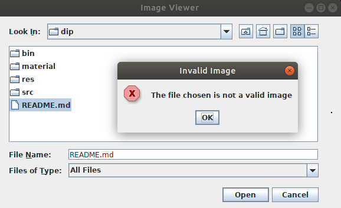
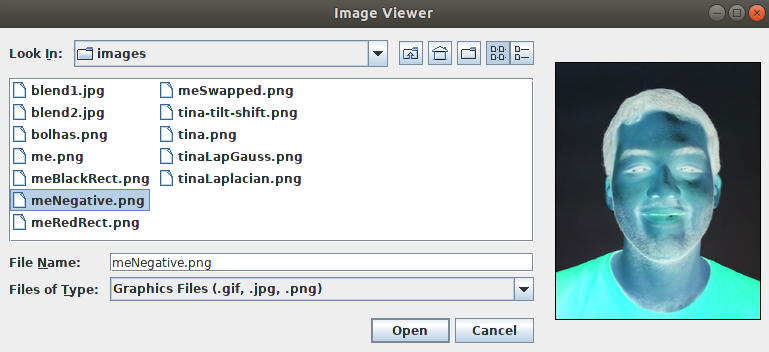

Hello, Tina Fey's Bossypants
Posted on Oct 17, 2018 in digital image processing
Here's a not so hot take: Tina Fey is awesome. Her accomplishments as a performer, writer and producer on Saturday Night Live, 30 Rock, Mean Girls, Unbreakable Kimmy Schmidt and other projects make her one of the greatest comedy minds of the 21st century.
And what's the relation between Tina Fey, the OpenCV library and Java?
None. I just find her incredible and I'm loving her autobiography, 2011's Bossypants.
Anyway, today we'll build an application where the user can choose a file from its file system and, if it's a valid image, it gets displayed on the screen. Let's call it Image Viewer.
You can see the final result below:
Creating the user interface
Inside the OpenCV library, we have a cross-platform GUI called HighGUI and a method called imshow(). With this method, we can create a window and display an image within it. This is an easy and quick way to create prototypes.
Unfortunately, there wasn't an imshow() method available for Java for a good amount of time, so we see a lot of work and tutorials using the Swing package, a popular GUI API that we've used on other posts before.
Thanks to this situation, we will use Swing to build the interfaces that we need. If your knowledge of Swing is limited, I recommend that you take a look at some previous posts made here.
Oh yeah, there's another thing, I'm using OpenCV 3.2.0 and I don't think there's a Java wrapper to the OpenCV HighGUI module. Newer versions of the library have it, though.
The first thing we need to do, assuming that you've already know a little about Swing and can create a basic frame, is load the OpenCV library. We do this with the loadLibrary() method from the System class. Also, in the image above, we can see that our application needs a JFileChooser and a JLabel. This means that, before the main method and the frame constructor, we need bring all of these components to life. We do this with the following code:
/** Loading the OpenCV library. */
static {
System.loadLibrary(Core.NATIVE_LIBRARY_NAME);
}
/** Creating the JFileChooser object that it's used to
* give the user a good experience while he searches for
* the image to be loaded. */
private JFileChooser imageChooser = new JFileChooser();
/** Creating JLabel object that will display the image
* to the user. */
private JLabel imageLabel = new JLabel();
With this ready, we style the components to provide a better user experience, add them to the content pane and add the necessary listeners. For instance, we use the addChoosableFileFilter() method from the JFileChooser to allow the user to filter the search results in the directories. In our case, we only want to display images, so we will filter the .gif, .jpg and .png files. To do this, we need an object from the FileNameExtensionFilter class.
The following code implements these tasks in our components:
/** Personalizing the JFileChooser object, adding it to the content pane and adding an ActionListener for when the user
* clicks in the "Open" or "Cancel" option that shows up in the component. */
imageChooser.addChoosableFileFilter(
new FileNameExtensionFilter("Graphics Files (.gif, .jpg, .png)", "gif", "jpg", "png"));
gridConstraints = new GridBagConstraints();
gridConstraints.gridx = 0;
gridConstraints.gridy = 0;
gridConstraints.fill = GridBagConstraints.BOTH;
getContentPane().add(imageChooser, gridConstraints);
imageChooser.addActionListener(new ActionListener(){
@Override
public void actionPerformed(ActionEvent e) {
imageChooserActionPerformed(e);
}
});
/** Personalizing the JLabel object and adding it to the content pane. */
imageLabel.setBorder(BorderFactory.createLineBorder(Color.BLACK));
imageLabel.setOpaque(true);
imageLabel.setBackground(Color.WHITE);
imageLabel.setHorizontalAlignment(SwingConstants.CENTER);
imageLabel.setVerticalAlignment(SwingConstants.CENTER);
gridConstraints = new GridBagConstraints();
gridConstraints.gridx = 1;
gridConstraints.gridy = 0;
gridConstraints.insets = new Insets(10, 10, 10, 10);
getContentPane().add(imageLabel, gridConstraints);
Now our interface is ready. When we see the imageChooser component on our screen, we see that there are two buttons. One with the name "Open" and another one with the name "Cancel". The actionPerformed() method is called when the user clicks on one of these buttons. Now, we need to define the behaviour of the application when one of these events is triggered. Our helper method imageChooserActionPerformed() will handle this.
Showing the image on the screen
With the getActionCommand() method from the ActionEvent class we can determine which button was clicked. We know that the property APPROVE_SELECTION from the JFileChooser class is related to the "Open" button, so we assume that any other action will be related to the "Cancel" button since we're only interested in opening the image when the user clicks in the "Open" button.
When the user clicks the "Open" button it means that he wants to see the image that the file represents in the screen. We need to find a way to pass this information to the OpenCV library so that it may help us open the file. Let's create a String named filePath that will store the path to the selected file. This string will store the result of the call of two methods: getSelectedFile() from the JFileChooser class and toString() from the File class. Basically, we get the file that the user selected and get its path in the form of a String object. To display the image using its path, we will create also a private method called showImage().
On the other hand, when the user clicks "Cancel", he doesn't want to use the application anymore, so it must close. We do this by calling exit(0) from the System class.
This is the code that makes up an important part of the application:
/** Helper method to decide what the application should do after the user interaction.
* If the user selects a file and clicks the "Open" button, it calls other methods
* that have the responsability to process the file and, if it's a valid image, show
* in the JLabel object.
* If the user clicks the "Cancel" button, it closes the application. */
private void imageChooserActionPerformed(ActionEvent e) {
if (e.getActionCommand().equals(JFileChooser.APPROVE_SELECTION)) {
String filePath = imageChooser.getSelectedFile().toString();
showImage(filePath);
} else {
System.exit(0);
}
}
The showImage() method is the juicy part of the application. It's here that we start to deal with the OpenCV library. Our plan is simple: we take the string with the path, read it, transform it into an image that can be displayed on the screen and readjust the screen to the size of the image.
To do this, we need an object from the Mat class. This class can be used to store grayscale or color images. We use the imread() method from the Imgcodecs class to load an image from a file. We pass what this method returns to our image object from the Mat class. In case everything works accordingly to plan, we need to transform the image object to an object of the Image class, since our imageLabel from the Swing package doesn't understand what a Mat object is. In this case, to be more specific, we transform it to an object of the BufferedImage class.
With our image prepared, we just set it as the Icon of our imageLabel to show it on the screen and readjust the size of the window to make sure the user sees everything.
Guess what we need to do before setting the icon? Yep, another transformation, now from our Image object to an object of the ImageIcon class.
The following code shows our full showImage() method and how to do everything explained above:
/** This method is responsible for the exhibition of the image in the screen.
* It receives a String with the path to an image inside a directory and shows
* the image on the user's screen. */
private void showImage(String filePath) {
/** Initializing the Mat object that represents the pixels of the image. */
Mat image = new Mat();
/** Using the method imread() to create a Mat object from the file chosen by
* the user. The try/catch block is used because of a bug in the OpenCV Java
* bindings that throws an Exception if the file chosen has less than 140
* characters. If it isn't used, we would see an error message in the console. */
try {
image = Imgcodecs.imread(filePath);
} catch (Exception e) {
}
/** Testing if the image was loaded as expected. The dataAddr() method points
* to an internal data address. If it's equal to 0, the imread method wasn't
* able to create a valid image from the chosen file. If it isn't, we create
* an Image object from the Mat since we need to make this conversion to show
* the resulting image on the screen. */
if (image.dataAddr() == 0) {
/** Showing the dialog box with an error message if the file isn't a valid
* image. */
JOptionPane.showConfirmDialog(null, "The file chosen is not a valid image",
"Invalid Image", JOptionPane.DEFAULT_OPTION, JOptionPane.ERROR_MESSAGE);
} else {
/** Creating an Image object from the Mat object. */
Image loadedImage = toBufferedImage(image);
/** Setting the newly created Image as the Icon of
* the JLabel that shows the image. */
imageLabel.setIcon(new ImageIcon(loadedImage));
/** Resizing the window to make sure that, if a new image is loaded,
* its display on the screen doesn't get limited by the previous image
* size. */
pack();
}
}
As you can see in the code above, there's a helper method that we didn't discussed so far, the toBufferedImage() method. It was made to receive a Mat object and return an Image object.
The first step of the transformation is to find out if we're talking about a grayscale or BGR image. To find this informaton, we check the number of channels of our matImage, the image in question represented as a Mat object. If it has more than one channel, it's a BGR image (in fact, there will be three channels, one for each color of the RGB model). The variable type will store the information about what color model we're using. The TYPE_BYTE_GRAY or the TYPE_3BYTE_BGR property will tell it to the variable which model should we use.
Now we need to have a tricky conversation. The content of the matImage object is the data about the image. We will take all of this content and put it on a byte array, since we're here representing the image as a 8-bit image. Let's call it buffer. Then, we will create the bufferedImage object from the BufferedImage class and pass to it all of the content from the matImage object, meaning, of course, the buffer. This is not a direct process, so hear me out.
Since we have images from different sizes, we first need to find out what's the size of the buffer that we need. An object from the Mat class has rows, columns and channels to represent the pixels from an image. Each pixel, positioned in a point represented by a row and a column number, has one channel if it's a grayscale image or three if it's a color image. To discover the size of our buffer that stores the content of the image, we only need to multiply the number of channels with the number of rows and the number of columns.
Next, we put all of the elements of matImage in the buffer using the get() method from the Mat class. Now we're ready to create our BufferedImage.
Before creating this object, it's important to remember that our bufferedImage needs to be of the same size as the matImage and have the corresponding type (8-bit grayscale or 8-bit color image, per example).
Now the question is: how do we put the data from the buffer in the bufferedImage? Do not fear, my friend, it's a weird, but easy process.
We only need to get the array of bytes of the bufferedImage. Then, we use the arraycopy() method from the System class to finalize our image.
Inside our bufferedImage there's a DataBufferByte, a class that encapsulates an array of bytes. The data in this class it's the destination that we need to find to pass the content of our buffer. This DataBuffer is encapsulated by a Raster, a class that represents a rectangular array of pixels. We chain together a couple of get methods from those classes to get this data.
If I were a betting man, I would bet that you didn't completely understood everything I've just written, but, by looking at the following piece of code, you probably will see that this is not a difficult process.
/** Helper method to transform a Mat object in a BufferedImage object. */
private Image toBufferedImage(Mat matImage) {
/** Using the channels() method from Mat to determine if we have
* a grayscale or BGR image. */
int type = BufferedImage.TYPE_BYTE_GRAY;
if (matImage.channels() > 1) {
type = BufferedImage.TYPE_3BYTE_BGR;
}
/** We need to create a byte array that will store the matImage contents.
* We find the size of this array through the number of elements in the
* Mat object. */
int bufferSize = matImage.channels()*matImage.cols()*matImage.rows();
/** Creating the byte array. */
byte[] buffer = new byte[bufferSize];
/** Using the get() method to put all of the elements of the Mat object
* with the image inside the byte array. */
matImage.get(0, 0, buffer);
/** Creating a BufferedImage (subclass of Image) with the same size and
* appropriate type as the image represented by the Mat object. */
BufferedImage bufferedImage = new BufferedImage(matImage.cols(), matImage.rows(), type);
/** Getting the data from the DataBuffer (a class that encapsulates one or more data arrays)
* of the BufferedImage object. The DataBuffer itself is encapsulated by a Raster, a class
* that represents a rectangular array of pixels.
* This step is done so that we can have access to the pixels of the BufferedImage object
* that will receive the data from the Mat object. */
final byte[] targetPixels = ((DataBufferByte) bufferedImage.getRaster().getDataBuffer()).getData();
/** Copying all of the byte array with the data from the Mat object to the pixels of the
* BufferedImage, thus, creating an Image object that can be shown in a JLabel component. */
System.arraycopy(buffer, 0, targetPixels, 0, buffer.length);
return bufferedImage;
}
That's it. It's also important to note that, in our application, if you don't choose an image, a message shows up informing you that you didn't choose a valid image, as you can see below:
Here's the link for the full code if you need to check it out. Thanks for reading! Here's also a sneak peek of our next post about the OpenCV Library using today's application:
